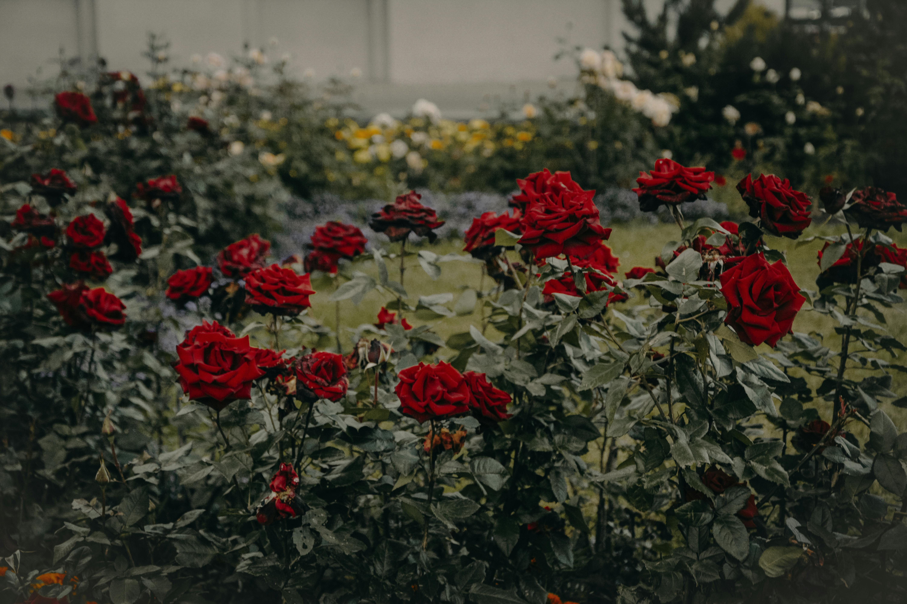
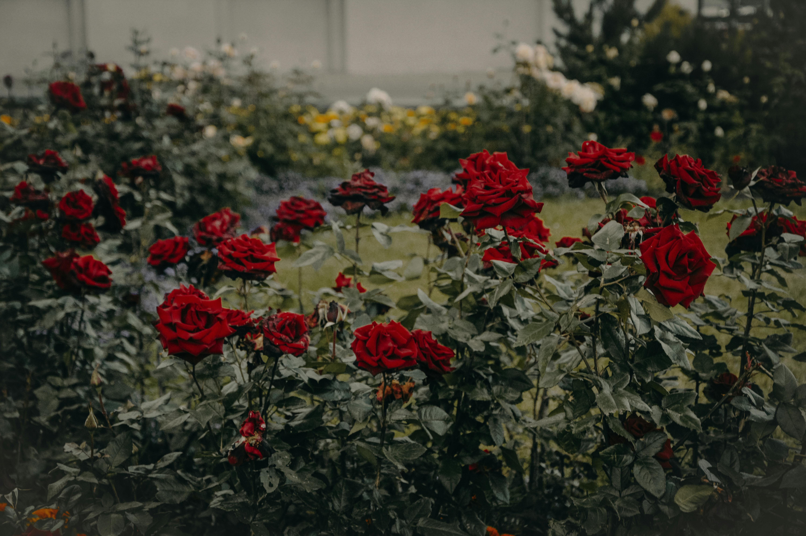

It is a classic for a special reason!
As part of the Rosaceae family, they come in many different colors. From its original red color to a yellow hue, we have them all!
Rose Fact
Did you know that roses are family to what you eat? That means they are family with apples, cherries, pears, and many other healthy foods!
 
